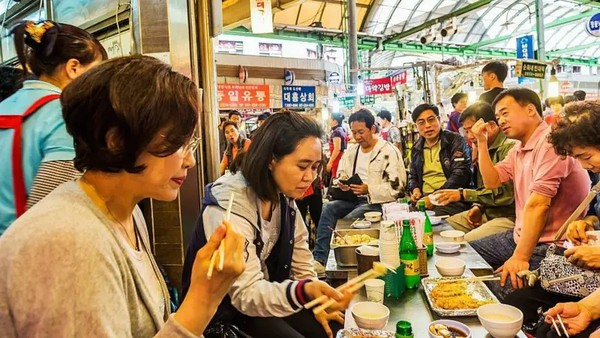

Sustentabilidade no Mundo
Coreia do Sul recicla 97% dos resíduos alimentares com sistema inovador
A Coreia do Sul é hoje referência mundial quando o assunto é reciclagem de restos de comida. O país consegue reaproveitar 97,5% dos resíduos alimentares, segundo dados de 2022, graças a um sistema que combina tecnologia, leis rígidas, campanhas de conscientização e participação ativa da população.
O princípio é simples: quem desperdiça, paga. Os moradores podem optar por descartar seus resíduos em sacolas especiais, recipientes com adesivos pagos ou em máquinas equipadas com sensores RFID, que pesam o lixo e registram o valor a ser cobrado. O custo varia de acordo com a quantidade descartada e, em média, uma pessoa que mora sozinha paga cerca de R$ 30 por mês.
O modelo começou a ser construído nos anos 1980, quando o país enfrentava sérios problemas com aterros sanitários. Em 2005, o descarte de comida em aterros foi proibido e, em 2013, entrou em vigor a cobrança por peso dos resíduos. Hoje, quem descumpre as regras pode receber multas que chegam a R$ 400 para residências e mais de R$ 40 mil para empresas.
Os restos de alimentos têm diferentes destinos: cerca de 49% viram ração animal, 25% são transformados em adubo e 14% em biogás. Apesar dos desafios, como o excesso de sal na culinária coreana e os riscos sanitários ligados à ração, o sistema é considerado um modelo de sucesso.
Para especialistas, a chave está em uma abordagem integrada: cobrança pelo desperdício, campanhas educativas constantes, fiscalização rigorosa e forte senso de responsabilidade social entre os cidadãos.
A experiência sul-coreana mostra que é possível reduzir drasticamente o desperdício de alimentos quando governo e população trabalham juntos — um exemplo que pode inspirar outros países, inclusive o Brasil, onde a taxa de reciclagem ainda é inferior a 2%.